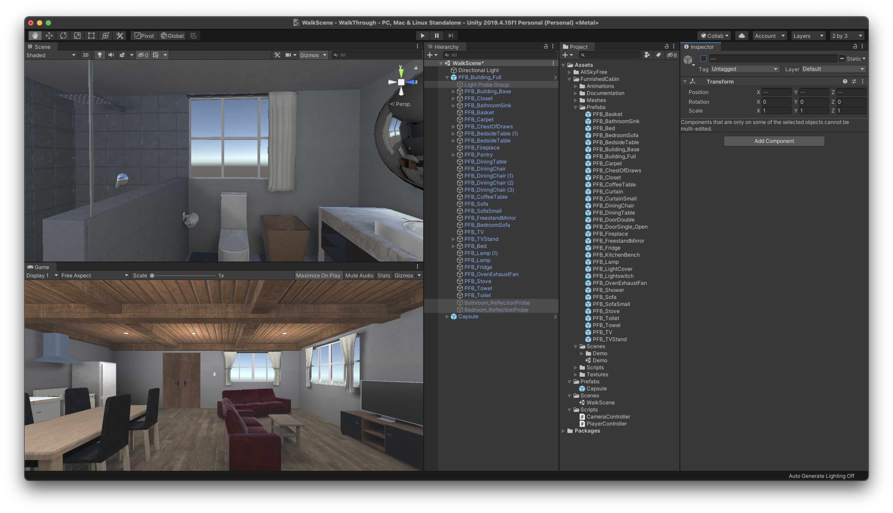
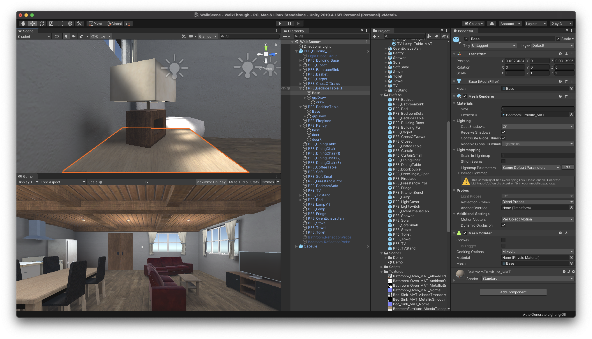
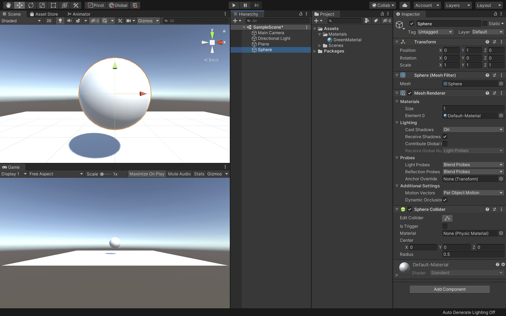
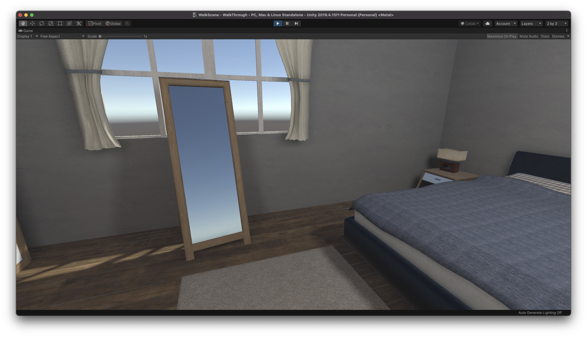
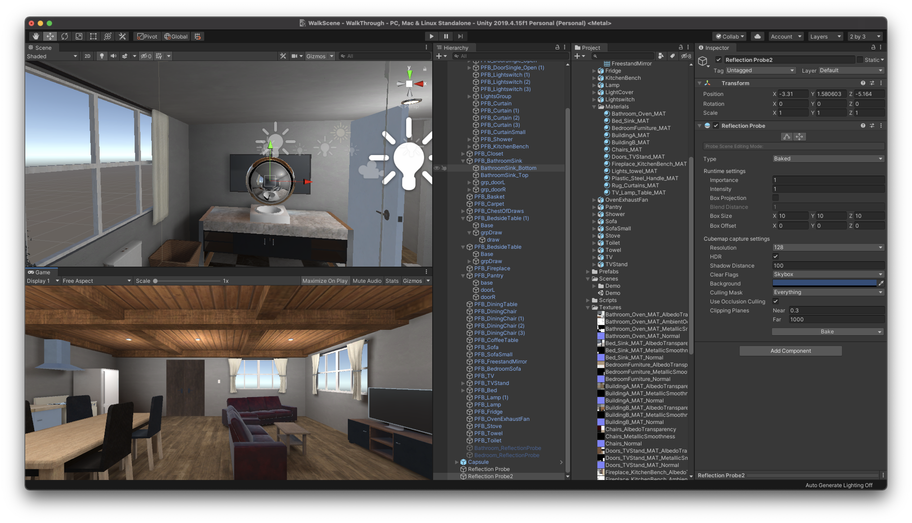

建物オブジェクトへの適用
WalkThroughプロジェクトを開く
今回は前回までで学習したマテリアルの設定方法やライティングを実際の3Dオブジェクトに反映させる方法について解説していきます。
まずは以前作成した「WalkThrough」プロジェクトを開きましょう。
他に3Dの屋内のデータがある場合はそちらを利用しても問題ありません。
プロジェクトを開いたら、プロジェクトウィンドウで新規フォルダを作成し、名前を「Prefabs」とします。
そして、その中に以前作成したCapsuleをドラッグ&ドロップで入れてプレハブ化しておきましょう。
次に何もない新規のシーンを作成します。 もしくは初めからあるSampleSceneやWalkSceneを開いてください。 そしてMainCameraを削除します。
そしてプロジェクトウィンドウから、Capsuleと建物のプレハブをヒエラルキーウィンドウにドラッグ&ドロップします。

次に「PFB_Building_Full」に初めからついている「Light Probe Group」「Bathroom_ReflectionProbe」「Bedroom_ReflectionProbe」を非アクティブにします。 別の建物オブジェクトを利用している場合はこの作業を行わなくて大丈夫です。
これで準備は完了です。
3DオブジェクトをStaticにする

次に建物全体や家具などを全てStatic（静的）にします。
Staticにする理由は、以前の講習で話した通り光をベイクすることによりデバイスへの負荷を減らす・陰影をリッチな表現にするためです。
今回使用したアセットは既にStaticにチェックが入っているのでそのまま利用します。
また、マテリアルに関しても本来であれば前回までで学習したようにMetallicやSmoothnessといった値を変更して調整する必要があるのですが、今回使用しているアセットは既に調整が済んでいるのでこのまま利用したいと思います。
もしマテリアルを調整したい場合は、プロジェクトウィンドウの「FurnishiedCabin -> Meshes -> Materials」フォルダの中に格納されているマテリアルを変更してみてください。
ライティングの設定

次にライティングの設定を行います。
モデルをリアルに表現するにはライティングの設定がとても重要なのですが、思い通りの表現ができるようになるためには何度もライティングの調整と確認を繰り返し覚える必要があります。
まずはUnityの「Edit -> ProjectSettings」を開きましょう。

そしてPlayerのOtherSettingsから「ColorSpace」を「Linear」に変更してください。
Linearに変更すると、全体的に少し明るくなりさらに明るいところの白飛びや、暗いところが黒く潰れるといったことが少なくなります。
しばらく待っているとUnityのシーンビューとゲームビューの色が若干変化します。
ガンマとリニアの違いについて
ガンマとリニアについての違いはUnityに限った話ではなく映像や写真を仕事で扱う方は知識としてあると思います。
現在のUnityのプロジェクトでは滅多なことがない限り（ハードウェアがガンマ形式しかサポートしていないなど）基本的に「Linear」を使用します。
Unityにおける２つの違いについて詳しく知りたい方はこちらの公式ドキュメントをご確認ください。
ライトマップの作成

次に「Window -> Rendering -> LightingSettings」を開き、そのウィンドウの右下にある「Generate Lighting」ボタンを押してください。
結構時間がかかるのですが、しばらく待っているとライトマップを作成することができます。
ライトマップとは
ライトマップとは、高負荷である光と影の計算を事前に行い、その情報をテクスチャに書き込んでおく機能のことです。
ライトマップを作成することにより実行時の負荷を軽くすることができます。

ここまでできたら実際に実行してみましょう。
デフォルトの状態よりもだいぶ明るい雰囲気になり、PCへの負荷も減ったかと思います。
しかし、最初からついていたリフレクションプローブなども非アクティブにしたので鏡が反射しなくなっています。
ですので、次はこちらを修正しましょう。
リフレクションプローブを適用させる

ヒエラルキーウィンドウから新規で「ReflectionProbe」を作成してください。
鏡からみた景色を表示したいので、位置を鏡と同じポイントにしてください。
そしてLightingSettingsから「GenerateLighting」をクリックすると、きちんと鏡のリフレクションプローブが反映されました。
実際に実行して確認してみましょう。

同様にバスルームの鏡用にもリフレクションプローブを作成し、GenerateLightingを実行してみましょう。
若干画質が悪いのですが、きちんと周りの背景を反射するようになったかと思います。
SkyBoxを適用させる

窓の外が何もない空間なので、SkyBoxを変更して少し雰囲気を出したいと思います。
AssetStoreを開き、検索バーに「skybox」と入力し検索してください。価格の部分で無料にチェックを入れると様々なSkyBoxが表示されると思いますので、任意のものを選択し、インポートしてください。
教材では「3D Skybox Pro」というアセットをインポートしました。

アセットに入っているSkybox用のマテリアルをシーンビューの何もない場所にドラッグ&ドロップすると、このように窓の外の景色が変わるかと思います。
SkyBoxを適用させる
既にライティングの設定が済んでいるアセットであればいいのですが、もしライティングがまだの場合は前回までの講習を参考に自分なりにライティングの設定をしてみましょう。
ライトの色や強度を変えてみたり、自然光を増やしたりするのもいいと思います。ライティングに関してはセンスや慣れといった部分が強いと思いますので、何度も自分の納得のいくまでトライ&エラーを繰り返して学習してください。
現在のライティングの正確な見た目を確認したい時はLightingSettingsの「AutoGenerate」にチェックをつけてください。
必ず確認が終わったらチェックを外すようにしてください。（チェックをつけっぱなしにしていると常に）

次に色を変更します。
今回はガラスのような質感にしたいのでカラーサークルの下にあるRGBAのA（透明度）の部分の数値を25程度にしてください。
その他の色は任意のカラーにしてもらって構いません。そして、Metallicの数値を0.5、Smoothnessの数値を1に変更してください。
本来であれば、これでガラスのような質感を出すことができるのですが、アルファ値を下げたのにも関わらずスフィアが半透明になっていません。
これは「RenderingMode」を変更していない為です。
Rendering Modeとは
RenderingModeとは、オブジェクトで透明度を使用するかどうかを選択することができ、さらに透明度の透過方法選択することができます。
こちらには４つのモードが存在します。
Opaque
デフォルトのモードで、透明にすることができなくなります。特に透明要素を扱わないオブジェクトは全般的にこのモードになります。
Cutout
透明か不透明かの２種類のみを扱うモードになります。半透明が存在しないので、主に木の葉や穴の空いた服などのマテリアルに利用されます。
Transparent
アルファ値に基づいた透明度になりますが、反射や照明の影響を受けます。プラスチックやガラスなどの質感を出すときに利用されます。
Fade
反射やハイライトがあっても完全に透明にすることができます。ホログラムや被ダメージ後の点滅などのフェードイン・アウトなどの表現に利用されます。
このように、マテリアルには４つのモードが存在するので、自分が意図した表現に適したモードを選択するようにしてください。
今回は、ガラスのような質感を出したいのでRenderingModeを「Transparent」にしてください。

そうすると、このようにスフィアが半透明になり、ガラス玉のような質感になったかと思います。
鏡のマテリアル
最後に鏡の質感を再現するマテリアルを作成します。鏡は写り込みの範囲等を設定する必要があるので少し複雑になります。
Sphereを複製する

ヒエラルキーウィンドウでSphereを選択し、Windowsの方は「Ctrl + d」、Macの方は「Cmd + d」を押してスフィアを複製します。
そして名前を「MirrorSphere」とし、PositionXを-1.5に変更してください。
これで複製されたスフィアが横に移動されました。
次に、プロジェクトウィンドウからGreenMaterialを選択し、Sphereと同様に複製します。
そして名前を「MirrorMaterial」に変更し、カラーを白に、MetallicとSmoothnessを1にしてください。
最後にこのMirrorMaterialをMirrorSphereアタッチして準備は完了です。
ReflectionProbeの配置
次に、周囲の風景を反射させるためにReflectionProbeを作成します。
こちらは容易に反射を作成することができるのですが、処理が重いため多用する場合は注意してください。

ヒエラルキーウィンドウで右クリックし、「Light -> ReflectionProbe」を選択してください。
そうすると、新規でReflectionProebeが作成されるので、座標をMirrorSphereと同じ位置にしてください。

ReflectionProbeのデフォルトでの反射対象オブジェクトは静的（static）オブジェクトのみになっています。
ですので、ヒエラルキーウィンドウでPlaneと全てのスフィアを選択し、インスペクターウィンドウで「Static」にチェックを入れてください。

そうすると、自動的にBakeが実行されます。しばらく待っているとMirrorSphereに周りの背景が反射して表示されるようになったかと思います。
Bakeとは
Bakeとは、あらかじめ影や反射を計算してテクスチャに反映させる処理のことです。 リアルタイムではなくベイク（焼き込み）にすることでアプリケーションの負荷を減らし画面の角付きやパソコンへの負荷を減らすことができます。自動でBakeしなかった場合はWindowタブから「Rendering -> LightingSettings」から「AutoGenerate」をチェックしてください。

これで綺麗に周りの背景を反射する鏡のマテリアルになったのですが、最初に作成したスフィアを見てもらうと、こちらも同様な形で反射が適用されています。

こちらは特に反射は適用させる必要がないのでReflectionProbeを無効にしたいと思います。
無効にする方法は、ヒエラルキーウィンドウでSphereを選択し、インスペクターウィンドウのMeshRendererコンポーネントにある「ReflectionProbe」をOffにするだけです。
同様にGlassSphereのReflectionProbeも変更したいと思います。
ただしこちらはガラスを表現したマテリアルなので、周りからの反射を反映させたいと思います。
現在は最初に作成したReflectionProbeの反射が反映されているので不自然な写り込みになっているので、このGlassSphere用のReflectionProbeを作成します。

まずはヒエラルキーウィンドウから「Light -> ReflectionProbe」を新規作成してください。
そして座標をGlassSphereと同じ位置にします。
少しゲームビューのカメラの位置が遠いので近づけておきましょう。

もし別のReflectionProbeも反映されている場合は、インスペクターウィンドウのReflectionProbesをSimpleに変更してください。
これでガラスの反射の方も完成です。
ここまで作り終わりましたら忘れずに保存しておきましょう。